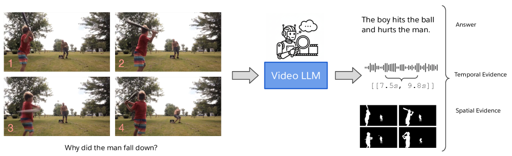

Figure 1: Migration gap ρ ( 8 ) = E oracle / E static \rho(8)=E_{\mathrm{oracle}}/E_{\mathrm{static}} (left) and effective order (right) versus relative depth, over six models (M...
新增 / arXiv 2026-07-13。它用 game-theoretic evidence process 按可用特征连续审计条件分位数预测器，在 Chronos-2 上发现多特征失校准；适合风险预警模型上线后的特征级可靠性监测。
研究背景
由原简报的核心问题、选取理由和相关性整理，不替代原文背景综述。
破裂风险、极端事件预测和诊断异常预警常需要概率输出。离线 test set 校准不能保证上线后仍可靠，因为工况、采样、控制策略和装置状态会连续变化。
从本日报的选取理由看，新增 / arXiv 2026-07-13。它用 game-theoretic evidence process 按可用特征连续审计条件分位数预测器，在 Chronos-2 上发现多特征失校准；适合风险预警模型上线后的特征级可靠性监测。
Figure 7 : Per-feature rejection rate vs. quantile α \alpha for Chronos-2 with a 30-day sliding window (FTRL betting on both pipelines). Companion to Figure 5 .
本轮空缺判断。2026-07-14 physics.plasm-ph 新稿包含 tokamak turbulence、fusion design platform、EAST impurity transport 等，但没有新的机器学习破裂预测、可见光图像-诊断时序融合或跨装置 AI 预测论文。
研究背景
由原简报的核心问题、选取理由和相关性整理，不替代原文背景综述。
聚变物理新稿仍可作为领域背景，但本简报的主线是 AI 机制与可迁移建模；将纯物理湍流或输运论文写成 AI 破裂预测新增会误导实验优先级。
从本日报的选取理由看，本轮空缺判断。2026-07-14 physics.plasm-ph 新稿包含 tokamak turbulence、fusion design platform、EAST impurity transport 等，但没有新的机器学习破裂预测、可见光图像-诊断时序融合或跨装置 AI 预测论文。
Figure 1: Migration gap ρ ( 8 ) = E oracle / E static \rho(8)=E_{\mathrm{oracle}}/E_{\mathrm{static}} (left) and effective order (right) versus relative depth, over six models (M...
Figure 7 : Per-feature rejection rate vs. quantile α \alpha for Chronos-2 with a 30-day sliding window (FTRL betting on both pipelines). Companion to Figure 5 .
时序风险模型如何证明它依赖的是破裂前兆区域，而不是 shot 阶段、曝光或背景结构？
对当前主题的关键意义在于：最小实现是复用现有可见光 encoder，新增 evidence head 和 time segment head，比较有无证据监督时跨装置误报、提前量和专家可解释性评分。
方法与关键创新

Figure 1 : E-VQA: Evidence-Backed Video Question Answering . Models provide textual answers to video questions while grounding their reasoning in spatio-temporal evidence, includin...
将最终风险输出与 temporal evidence、局部 mask/heatmap 或 ROI score 绑定，训练时同时优化风险和证据一致性。
阅读时需要把方法设计与主要结果一起看：原文显示现有 Video LLM 的回答准确率与视觉 grounding 会脱钩，grounded 数据可显著提升时空证据质量。
实验结果
原文显示现有 Video LLM 的回答准确率与视觉 grounding 会脱钩，grounded 数据可显著提升时空证据质量。
局限性
P3 不需要完整 VQA 生成系统，重点应抽取证据监督和评估协议；否则计算成本会过高。
总结
适合设计“破裂风险 + 局部证据”双输出模型。
研究相关性与启发
最小实现是复用现有可见光 encoder，新增 evidence head 和 time segment head，比较有无证据监督时跨装置误报、提前量和专家可解释性评分。
02
在研课题启发：P3 可见光图像与诊断时序融合的破裂预测
LMV-Net：多视角图像的纵向显式对齐用于风险建模
Longitudinal Multi-View Breast Cancer Risk Prediction
Figure 1 : E-VQA: Evidence-Backed Video Question Answering . Models provide textual answers to video questions while grounding their reasoning in spatio-temporal evidence, includin...
如何同时利用多视角空间互补性和纵向时间变化，让模型关注风险相关的变化而不是静态外观差异？
对当前主题的关键意义在于：最小实验是为可见光图像建立少量固定区域或磁面相关 ROI token，与诊断时序按 shot 时间对齐，比较无对齐 late fusion、显式纵向对齐和诊断 query 图像 ROI 三种方案。
方法与关键创新
Figure 1 : Schematic overview of the proposed LMV-Net.
![Figure 1: Migration gap ρ ( 8 ) = E oracle / E static \rho(8)=E_{\mathrm{oracle}}/E_{\mathrm{static}} (left) and effective order (right) versus relative depth, over six models (Mamba-1 130M–2.8B and Falcon-Mamba-7B). Coloured lines are individual models (shared legend); the bold black line is the across-model median with an interquartile ribbon; the shaded region is the migrating band (relative depth 0.4 0.4 – 0.75 0.75 ). Left: ρ < 1 \rho<1 (dashed) means a per-input oracle reconstructs the layer output with less error than any fixed mode set; the median dips through the band and each model’s strongest layer, marked by a dot in the model’s colour, reaches ρ ≈ 0.5 \rho\approx 0.5 : the static set’s error is twice the oracle’s at the same budget. Right: the participation ratio rises from about two modes at the ends of the network to five–eight in the same band, so migration concentrates in the layers that spread their output over more modes.](../assets/figures/486b4e2ab78d0834.png)